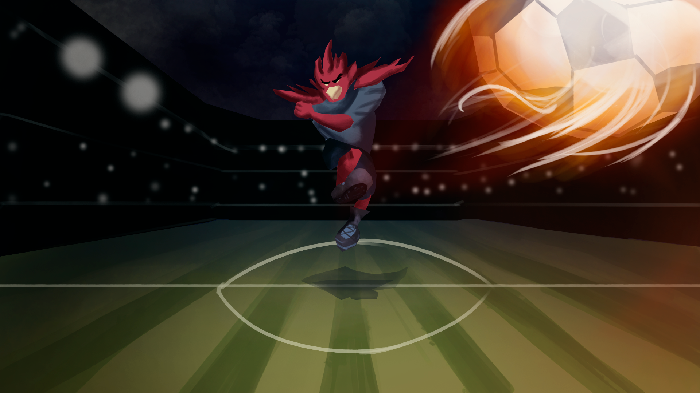

BLAZING SOCCER
Blazing Soccer es un proyecto donde se combinan los conceptos de juego de pelea y el futbol, donde podras jugar con las mascotas de tus equipos favoritos del futbol y dominar tus contricantes. Esta pensado para ser un juego multiplayer online y offline donde dos jugadores intercambian constantes disparos, y aquel que logre ensestar más goles, gana. Este proyecto lo organice completamente yo, desde el game design y el arte de concepto que estan a punto de ver
Arte promocional (2020)
Personajes de Blazing Soccer (2020)
Arte de escenario de cancha (2020)
Poses de Juancho (2020)
Turntable de Juancho (2020)
Mock Up de juego (2020)